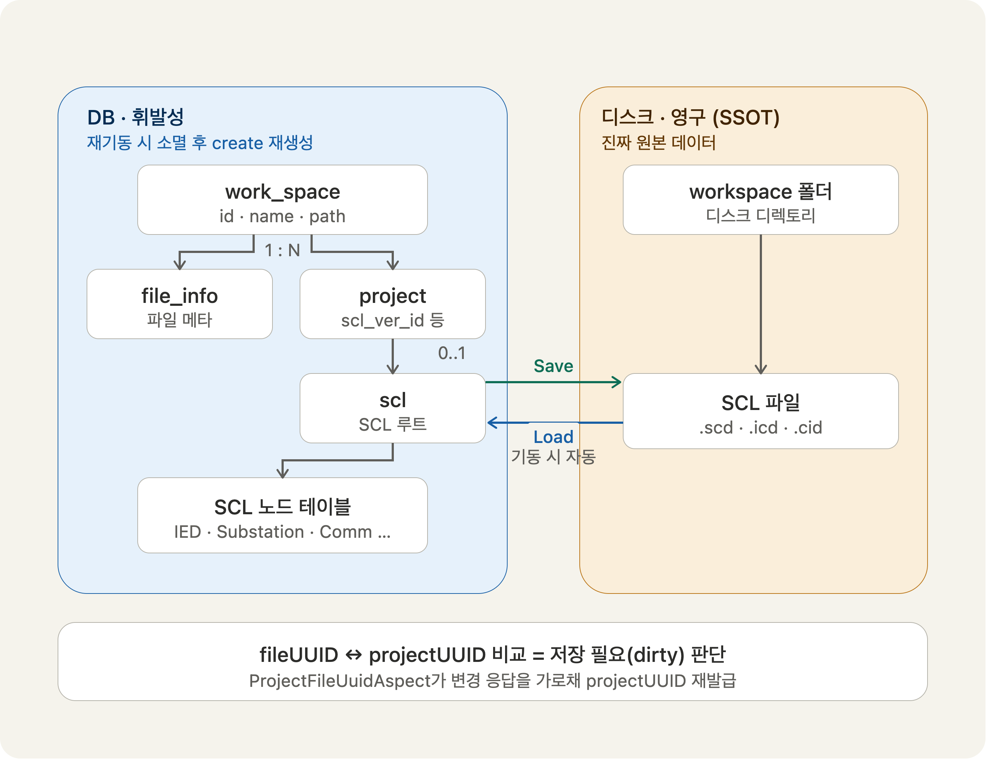

이 어플리케이션은 별도 DB 서버 설치 없이 애플리케이션에 내장되는 무설치 배포가 요구사항이라, 경량 임베디드 DB(H2·SQLite)가 후보였다. 동시에 이 도메인의 최종 산출물이자 영구 데이터는 편집한 xml 파일 자체이고, DB는 편집 세션 동안 xml 파일의 노드 트리(124개 테이블 규모)를 다루기 위한 저장소일 뿐이었다. 즉 "DB를 영구저장소로 볼 것인가, 세션용 작업 저장소로 볼 것인가"를 결정해야 하는 상황이었다.
이 결정을 앞당긴 건 구체적인 실패였다. SQLite에서 스키마를 영속화하며 부팅하자 SessionFactory 빌드 단계에서 [SQLITE_ERROR] too many terms in compound SELECT가 발생했다. 원인은 SQLite 엔진이 아니라 xerial 드라이버가 DatabaseMetaData 조회를 스키마 크기에 비례하는 거대한 UNION ALL 쿼리로 생성해 compound SELECT 상한(기본 500)을 초과한 것으로, 124개 테이블 규모에서 재현됐고 H2에서는 재현되지 않았다. 이 실패가 "DB의 역할을 무엇으로 규정할 것인가"라는 질문을 강제했다.

- 서버 기동 : workspace 디렉토리 스캔 → DB에 워크스페이스 정보 및 해당 워크스페이스 아래에 작업중인 파일들의 파일정보(폴더 경로, 생성날짜 등) 등록
- Load : 파일 → DB에 파일 내용을 insert.
- 파일 ↔ DB 불일치 체크 : create/update/delete 컨트롤러를 AOP로 가로채 파일의 수정이 일어날 시 project의 UUID 재발급 → fileUUID와 비교해 DB와 파일 저장소의 파일의 불일치 여부를 판단하여 사용자에게 알림.
- Save : 사용자가 화면에서 저장 버튼 클릭 시 영구 저장소의 파일을 사용자가 지정한 폴더 경로로 떨궈줌. 사용자가 저장을 요청할 때만 파일 저장을 진행하고 자동 저장 기능은 지원하지 않음.
- 이중 저장소 정합성 문제 제거 — 파일을 유일한 정답 데이터로 취급하여 DB를 영속화 했을 때 발생할 파일 ↔ DB 상태 불일치와 동기화 문제를 없앰.
- 스키마 마이그레이션·드리프트 관리 제거 — 매 기동 create로 스키마를 재생성해, 124개 테이블이 항상 현재 엔티티 정의와 일치. 마이그레이션 스크립트·버전 관리 부담이 사라졌다.
- 백업 단순화 — 매 기동 깨끗한 스키마로 시작해 임베디드 DB에 상태가 누적·손상될 여지가 없고, 백업/보호 대상이 DB가 아닌 파일 폴더로 단순화됐다.